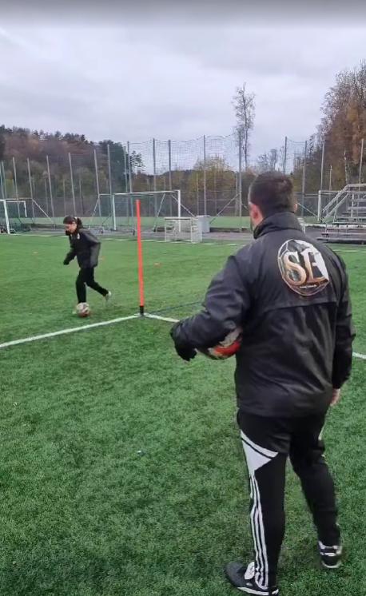
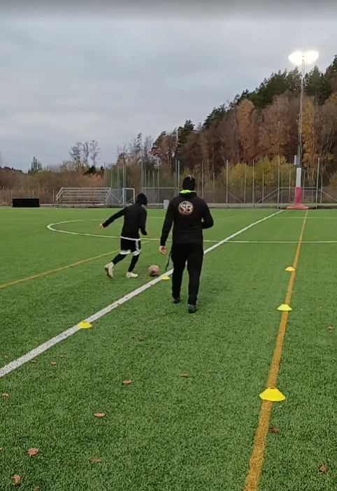
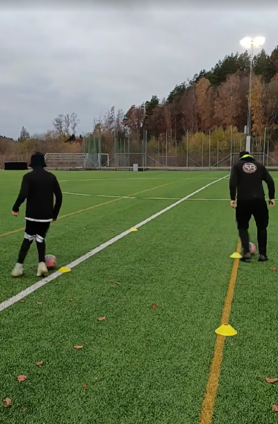
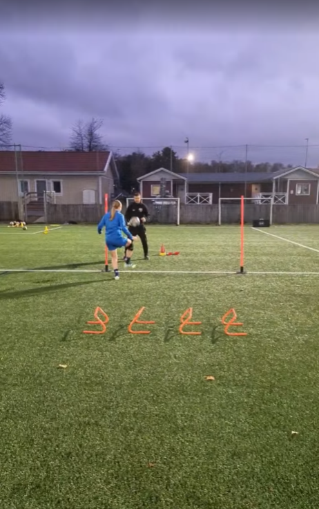
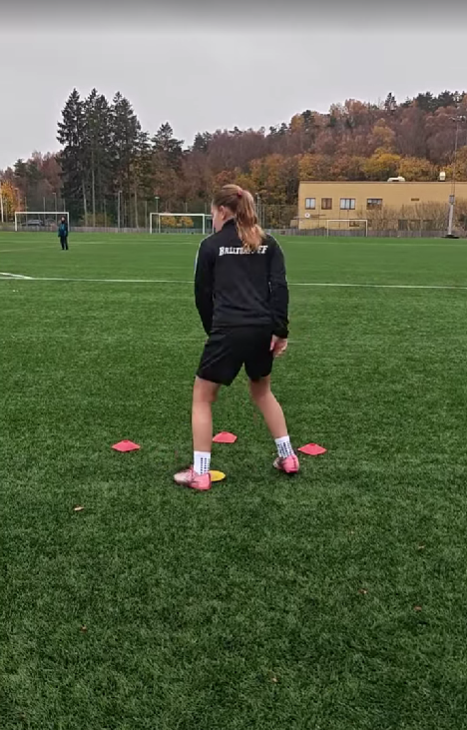
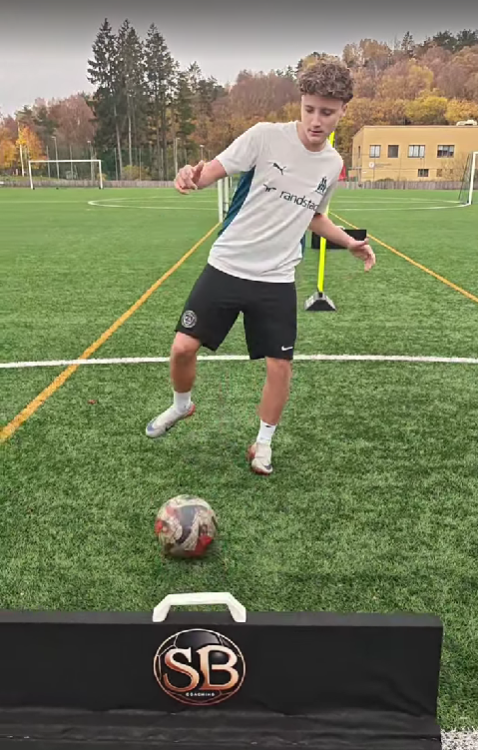
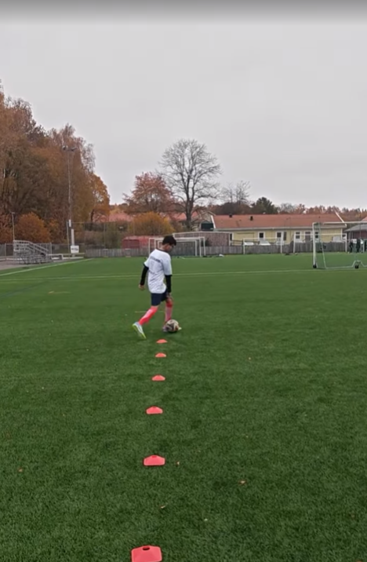
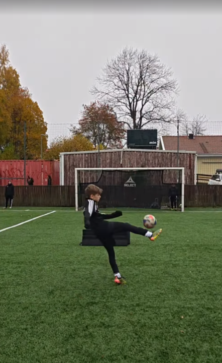
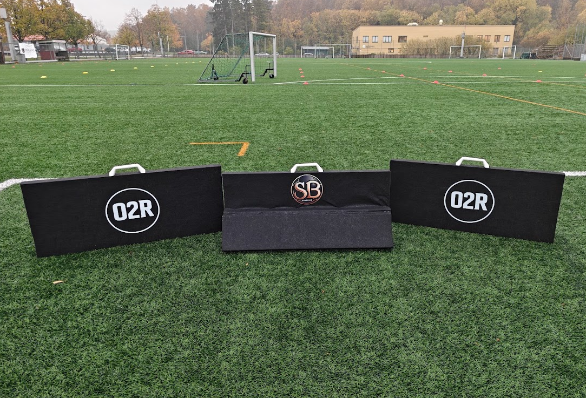
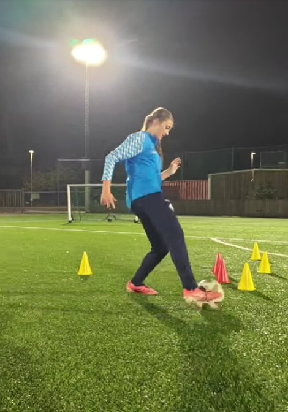

Individuell träning
Ett pass med fullt fokus på spelarens egna mål, teknik och utvecklingsområden.
Fråga om plats ↗ SB COACHING
SB COACHINGKvalitativa fotbollspass från 8 år. Vi anpassar innehåll och upplägg efter spelarens nivå, mål och önskemål.
Ett pass med fullt fokus på spelarens egna mål, teknik och utvecklingsområden.
Fråga om plats ↗Träna i en mindre eller större grupp med upp till 10 spelare och mycket feedback.
Anmäl intresse ↗Temapass och kompletterande träning för lag och föreningar, utifrån era önskemål.
Kontakta oss ↗Vi tränar på situationer och detaljer som spelaren möter i match.
Bilder från individuella träningspass med fokus på teknik, bollkontroll och spelmoment.










Vi erbjuder enstaka pass och träningspaket. Kontakta oss så hittar vi ett upplägg som passar.